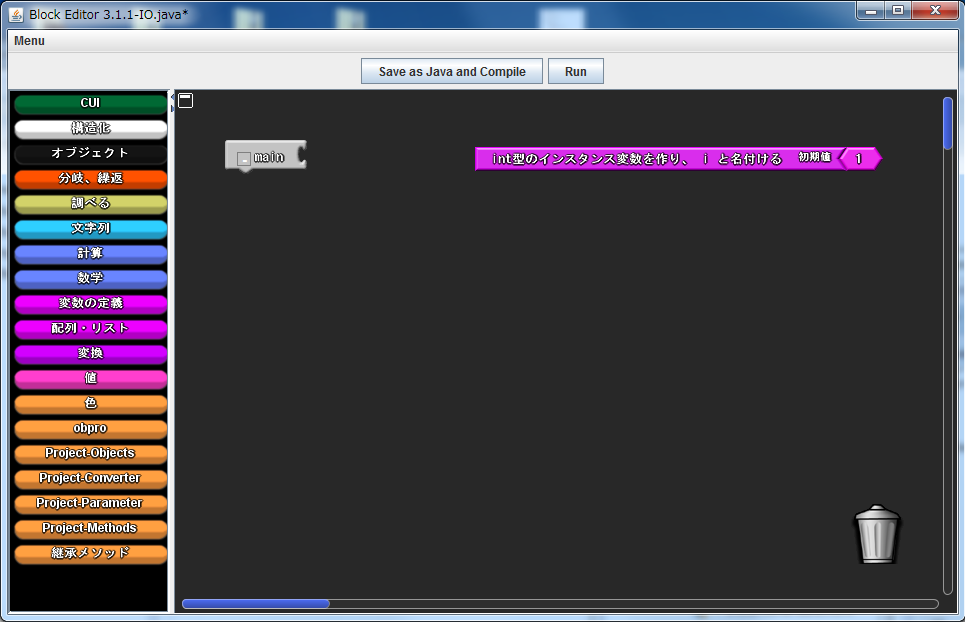
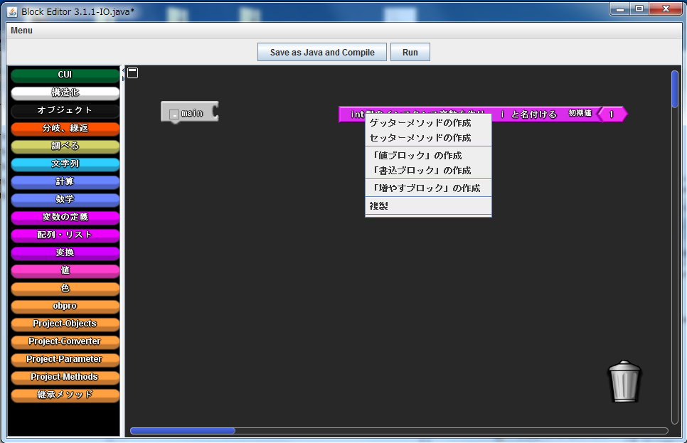

変数の宣言
インスタンス変数の場所
インスタンス変数はそれぞれの変数のある場所にあります．例えば，int型のインスタンス変数であれば「変数の定義」ファクトリに，配列変数であれば，「配列・リスト」ファクトリから取り出すことができます．
変数の宣言
インスタンス変数のブロックは，ローカル変数と違い，キャンバスの何処に置いても宣言されます．下の例では，int型のインスタンス変数を宣言しています．ローカル変数のように，他のブロックと結合された状態でなくても利用できます．

変数名の変更や，値の代入などに関してはローカル変数と同様です．
インスタンス変数への値の代入と参照
変数への書き込み，値ブロックはローカル変数と同様右クリックで作成することができます．
